Agent Grants: subagent budgets enforced by Stellar smart accounts
The Aha Company
What Perch is
An agent raised its own cap
Breckenridge, Vilardell, Wang, Zhang and Juels, “I-HITL: Inalienable Human-in-the-Loop”, 2026arXiv:2610.35835
A contained policy runtime
Example: a mail assistant
A cap the agent cannot raise
The pseudocode, field by field, in Perch's two kinds of document (crates/perch-ir/src/doc.rs, kebab-case JSON): first the account document, then the agent's grant document
a document of its own, not part of the account document: the account stores it apart, in its grant map under grant id 1, with its own rules. apply_grant(1, doc_json) adds it and remove_grant(1) removes it and every rule it installed; the account document's admin rule (the owner's passkey) authorizes both, and the account document never lists its grants.
"cap": { "limit": "100000000", "period-ledgers": 100 }: 10 XLM in stroops, over a sliding window of 100 ledgers, about 8 minutes at 5 seconds a ledger. Cedar has no sliding window; the account keeps the window and enforces the cap.
ledger < 65,900,000
"not-after-ledger": 65900000, a ledger number, not a time
forbid (agent_key, any action, this_account or its recovery contracts)
not a field: apply_grant refuses a grant with a self-admin rule or a rule reaching the account's own rules or recovery, and it is proven that no grant, nor one derived from it, allows such a call.
Cedar-style pseudocode, not valid Cedar: the authoring form we will compile to these rules (Tranche 1). Today a document is written as this JSON, and the account stores the compiled rules. Values are illustrative.
Narrowing a grant
Perch, in a shipping wallet
Nido: pre-release on Stellar mainnet
The current version runs on testnet, at nido.fyicontext
Perch contracts on Stellar mainnet since 2026-10-26: registry, compiler, account factorycontext
1,662 npm downloads of @stellar-registry/perch, 2026-10-10 to 2026-11-08context
A scripted Nido run on testnet, 2026-11-05: 11 transactions, and an over-cap payment refused before signing
context: reported under Nido’s SCF #41 award, not claimed for this ask
This demo is simulated in this page: a software passkey and a test token.
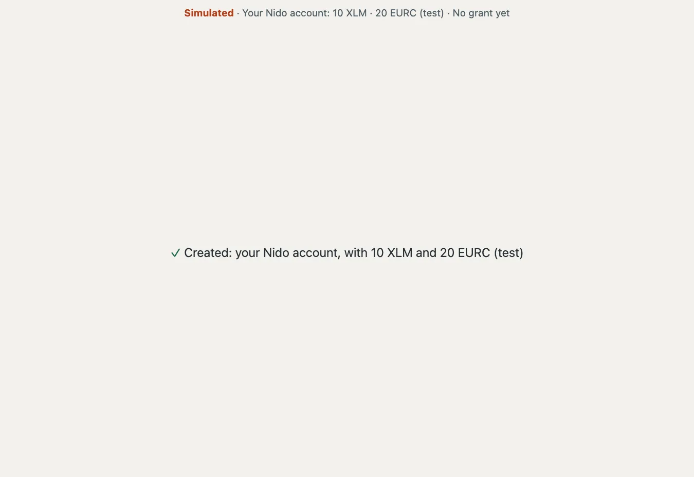
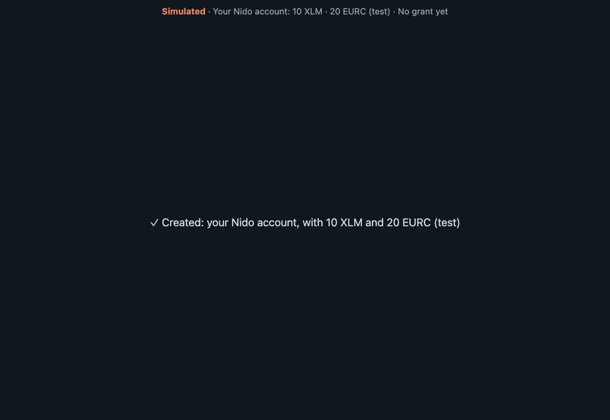
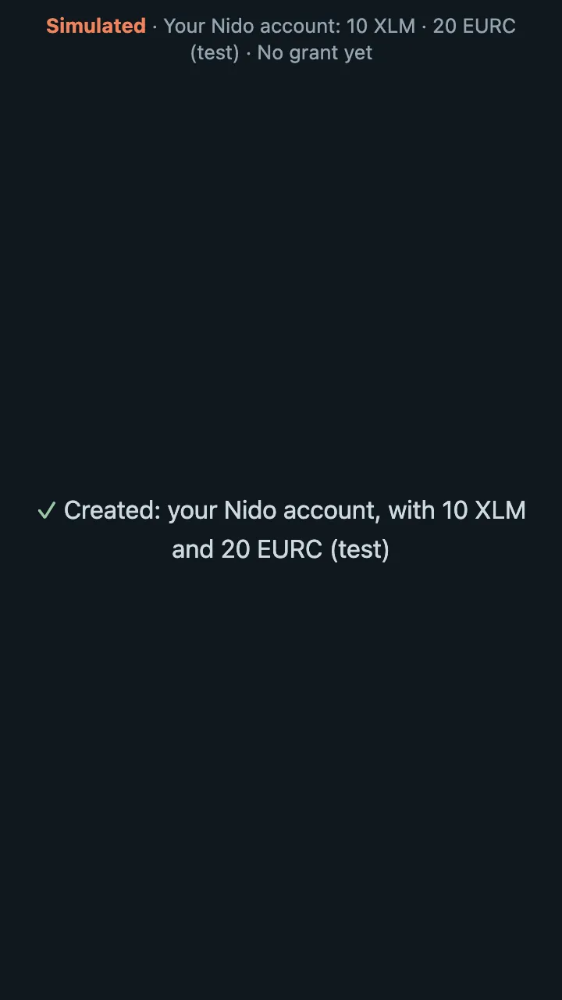
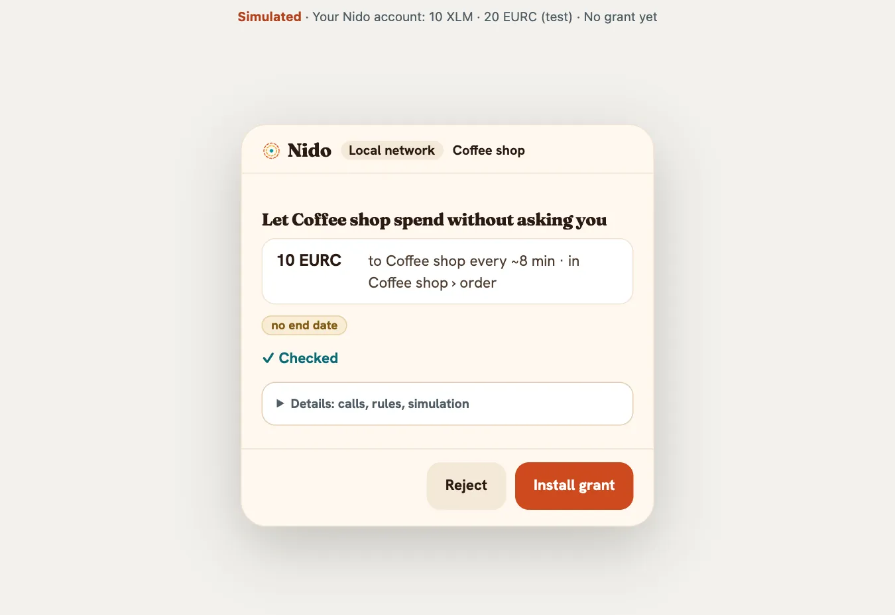
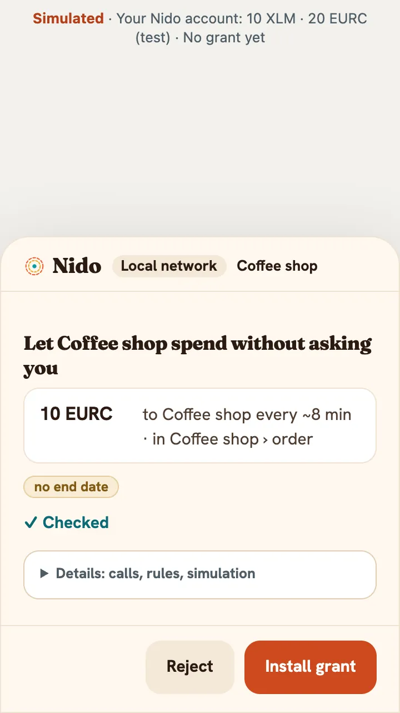
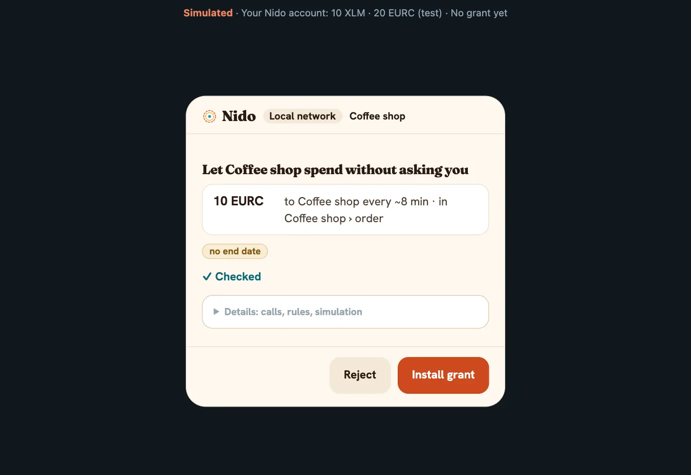
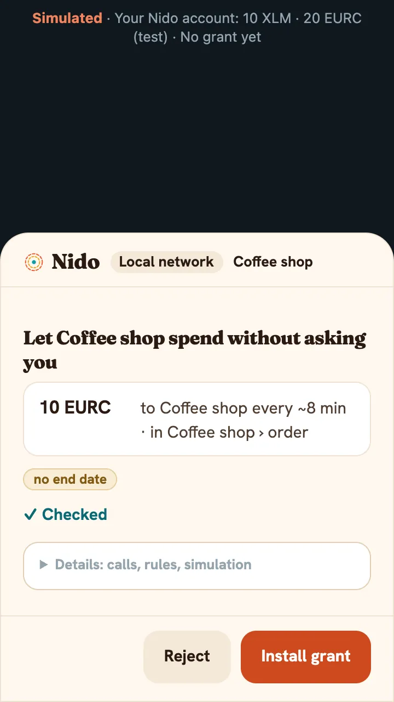
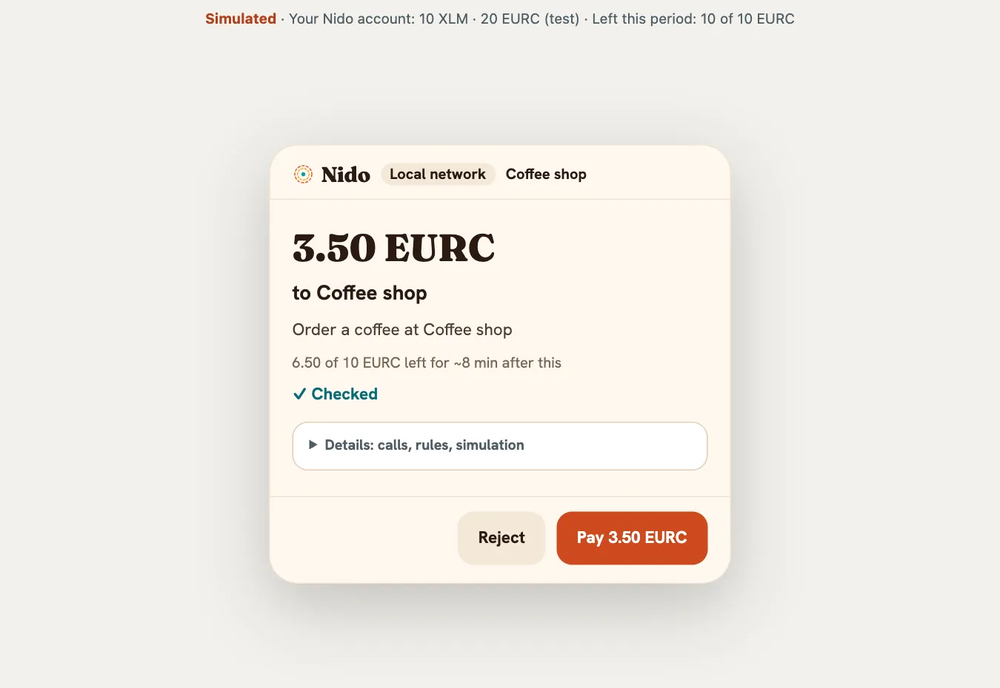
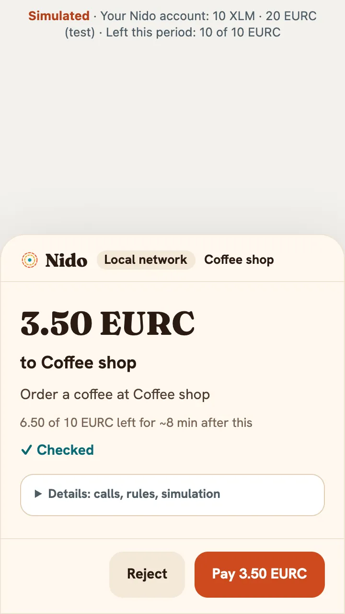
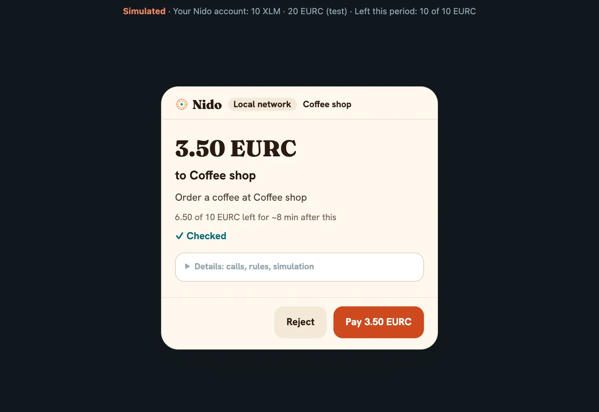
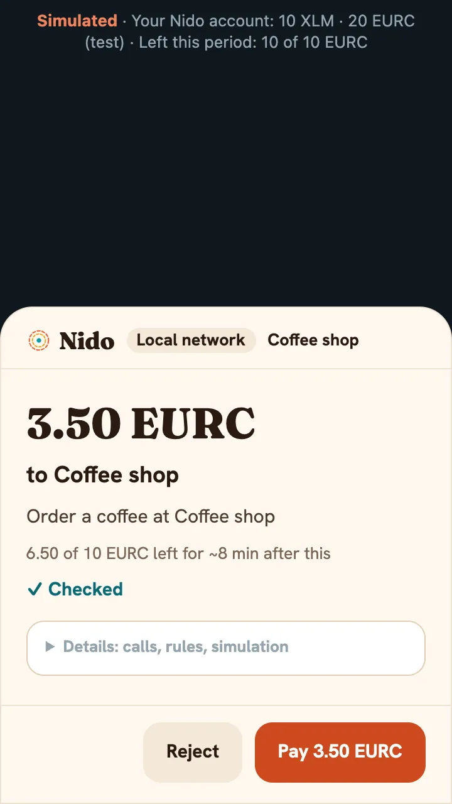
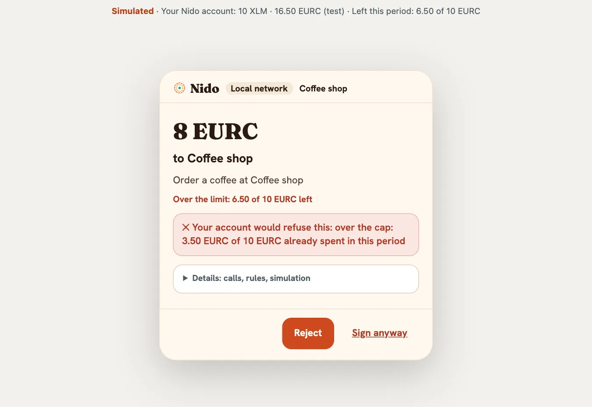
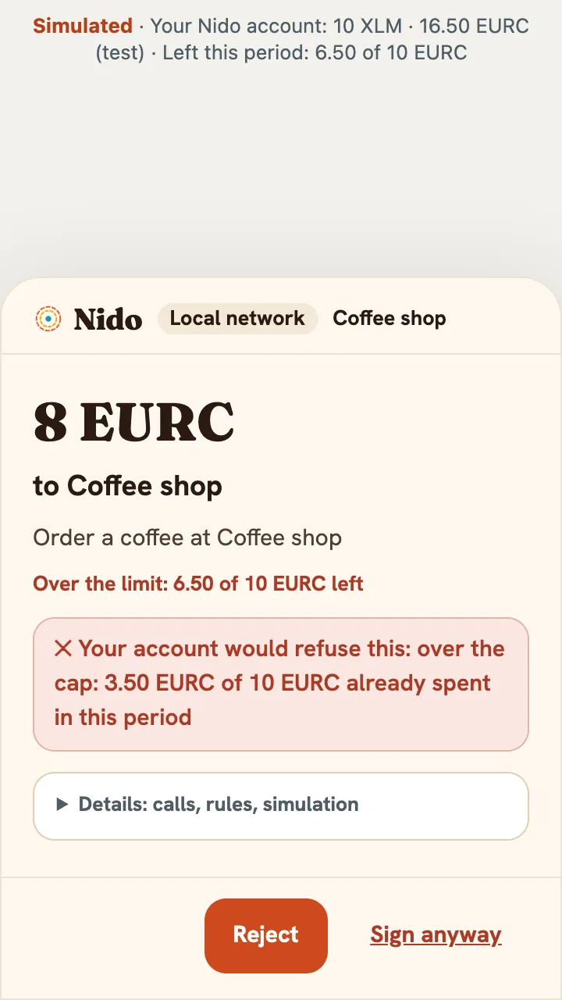
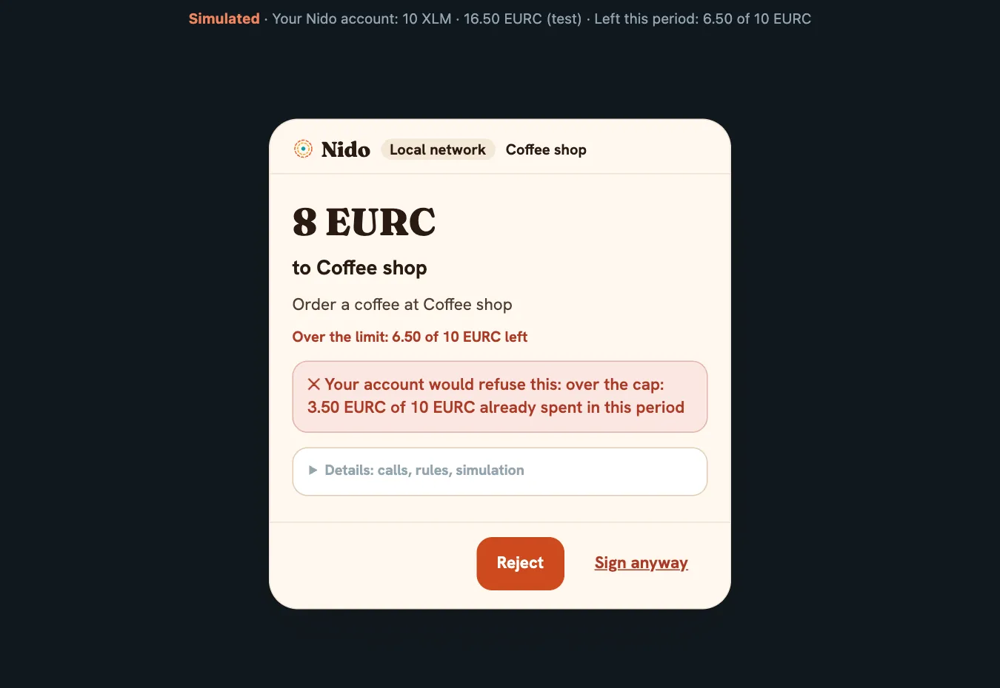
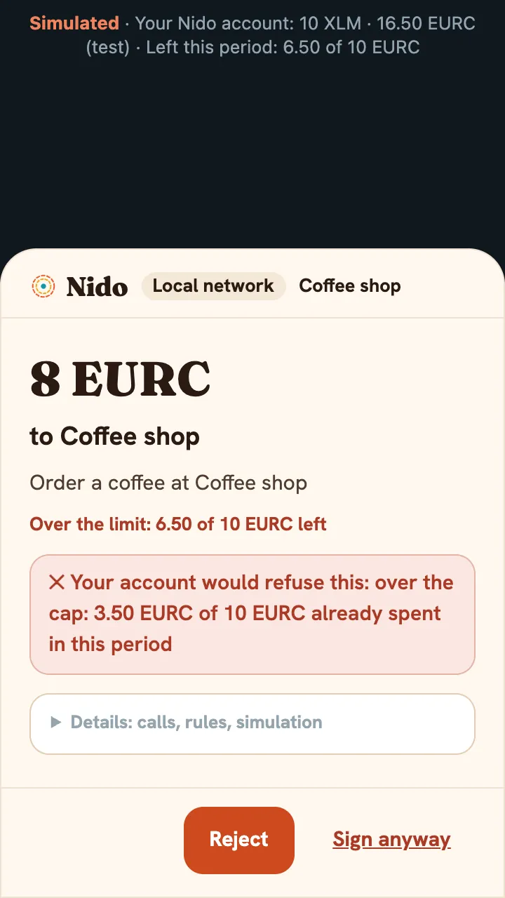
Create the account with a passkeyApprove the shop grant: 10 test EURC every ~8 minutes, only to the shopBuy a coffee: within the capOrder past the cap: refused before anyone signs